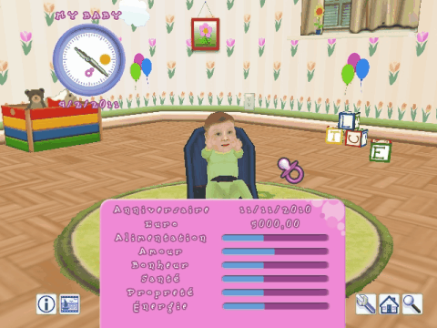

12 |
Statut du jeu |
 |
|
Les informations de statut contiennent des détails sur ton bébé et tout ce que tu veux savoir !

Horloge
Menu Information
Anniversaire Date de naissance de ton bébé
Budget dont tu disposes Alimentation Ton bébé a-t-il faim ? Cette barre représente son appétit. Un niveau bas indique qu'il est temps de le nourrir !
Amour Si cette barre n'est pas pleine, cela indique que bébé a besoin d'amour et que tu dois lui accorder davantage d'attention et d'affection. Ton bébé réagit aux câlins et aux caresses en se sentant aimé. Veille à ce que cette barre soit toujours pleine.
Bonheur Ton bébé joue-t-il assez ? Joues-tu avec lui ? Cette barre représente le niveau de bonheur de bébé. Pour le rendre heureux, vérifie qu'il a des jouets et fais-le rire ! Sélectionne ton bébé pour le chatouiller et le faire rire !
Santé Cette valeur est très importante. Lorsqu'elle est trop basse, bébé tombe malade et la Nounou doit appeler le médecin.
Propreté De jour comme de nuit, bébé se salit et a besoin d'être changé. Une valeur basse indique qu'il est temps de changer sa couche ou de lui donner un bain !
Énergie Les activités pratiquées par bébé tout au long de la journée (jeux, marche à quatre pattes, équilibre, marche, etc.) le fatiguent. Une sieste ou une bonne nuit de sommeil lui permettront de récupérer de l'énergie.
|
 |
 |
 |